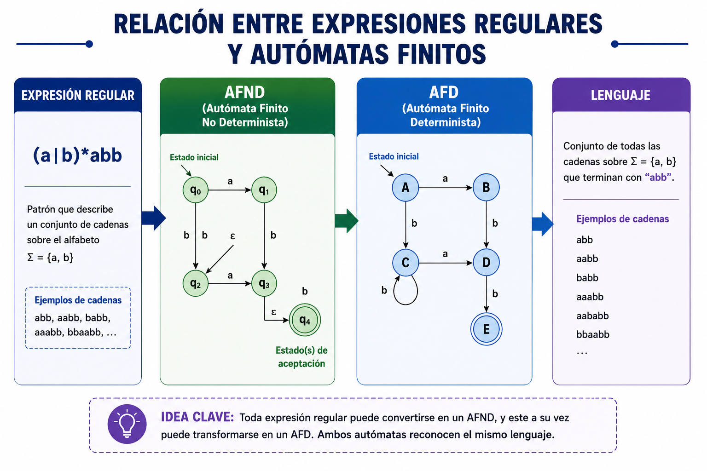
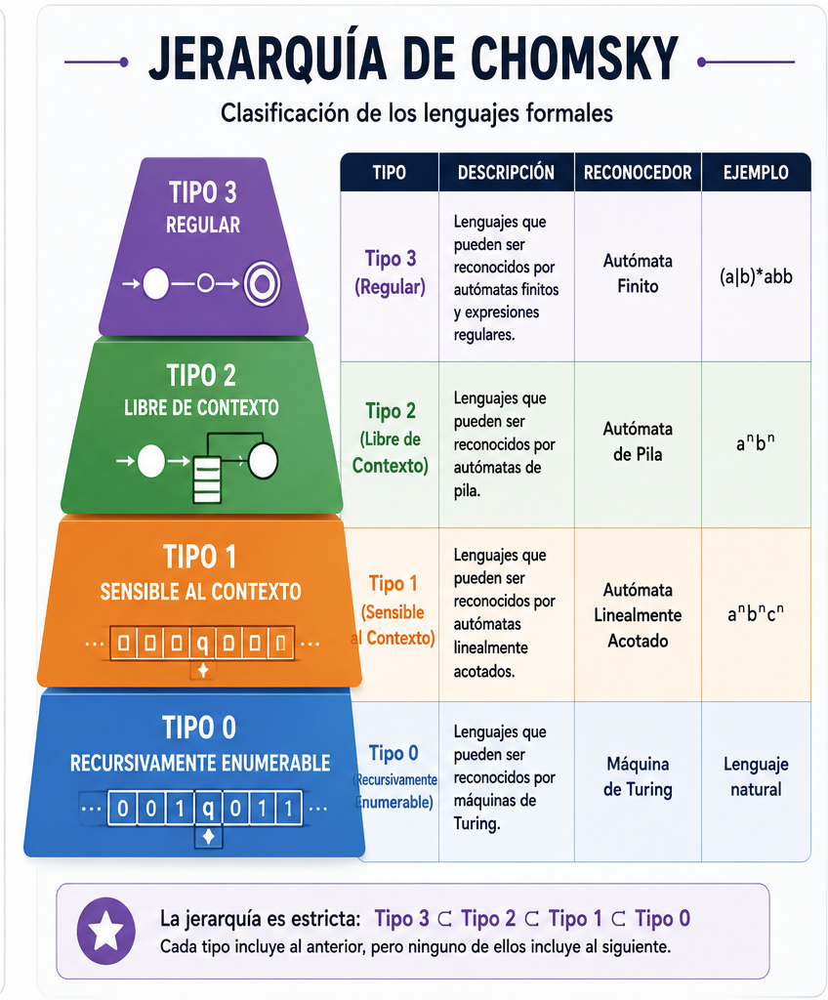

2.1 Definición formal de una Expresión Regular

Una expresión regular, también conocida como ER o
Regex, es una notación formal que permite describir conjuntos
de cadenas mediante patrones. En la teoría de lenguajes formales, las expresiones
regulares son fundamentales porque representan lenguajes regulares, los cuales
pueden ser reconocidos por autómatas finitos.
Una expresión regular no describe una sola cadena, sino un conjunto completo de
cadenas que cumplen una misma regla. Por ejemplo, una expresión puede representar
todas las cadenas formadas únicamente por los símbolos a y
b, o todos los correos electrónicos que tienen una estructura
válida.
Dato importante:
Toda expresión regular puede convertirse en un autómata finito, y todo
autómata finito puede representarse mediante una expresión regular.
Esta relación es muy importante dentro de la teoría de lenguajes formales.
a* → cero o más repeticiones de a
ab → la cadena formada por a seguida de b
a|b → puede ser a o puede ser b
(a|b)* → cualquier combinación de a y b
[0-9]+ → uno o más dígitos numéricos
Ejemplo:
La expresión (a|b)* representa todas las cadenas posibles formadas
con los símbolos a y b, incluyendo la cadena vacía.
Cadenas válidas: ε, a, b, ab, ba, aabb, ababab.
Cadenas no válidas: c, ac, abc, 123.
2.2 Operadores básicos de las Expresiones Regulares
Las expresiones regulares utilizan operadores que permiten construir patrones.
Estos operadores indican repetición, selección, agrupación o rangos de caracteres.
Comprenderlos es esencial para diseñar expresiones correctas.
| Operador |
Nombre |
Significado |
Ejemplo |
| * |
Cerradura de Kleene |
Cero o más repeticiones |
a* acepta ε, a, aa, aaa |
| + |
Uno o más |
Una o más repeticiones |
a+ acepta a, aa, aaa |
| ? |
Opcional |
Cero o una aparición |
a? acepta ε o a |
| | |
Alternativa |
Una opción u otra |
a|b acepta a o b |
| () |
Agrupación |
Agrupa expresiones |
(ab)* acepta ε, ab, abab |
| [] |
Clase de caracteres |
Permite elegir un carácter de un conjunto |
[abc] acepta a, b o c |
| {} |
Cuantificador |
Indica número exacto o rango de repeticiones |
[0-9]{10} |
2.3 Construcción de Expresiones Regulares
Para diseñar una expresión regular se debe analizar primero qué estructura debe
cumplir la cadena. Después se identifican los caracteres permitidos, la cantidad
de repeticiones, los símbolos obligatorios y los elementos opcionales.
Identificar patrón
→
Definir caracteres
→
Agregar operadores
→
Probar cadenas
Ejemplo: validar teléfono de 10 dígitos
Expresión regular:
^[0-9]{10}$
Esta expresión indica que la cadena debe iniciar y terminar con exactamente
10 dígitos numéricos.
^ → inicio de cadena
[0-9] → cualquier dígito del 0 al 9
{10} → exactamente 10 repeticiones
$ → fin de cadena
2.4 Ejemplos reales de Expresiones Regulares
Las expresiones regulares se utilizan en problemas reales donde es necesario
validar que la información ingresada por un usuario tenga el formato correcto.
Esto ayuda a evitar errores, mejorar la seguridad y facilitar el procesamiento
automático de datos.
| Dato |
Expresión regular |
Ejemplo válido |
| Correo |
^[a-zA-Z0-9._%+-]+@[a-zA-Z0-9.-]+\.[a-zA-Z]{2,}$ |
usuario@gmail.com |
| Teléfono |
^[0-9]{10}$ |
5512345678 |
| CURP |
^[A-Z]{4}[0-9]{6}[HM][A-Z]{5}[A-Z0-9]{2}$ |
LOVI010203MDFABC09 |
| RFC |
^[A-ZÑ&]{3,4}[0-9]{6}[A-Z0-9]{3}$ |
LOVI010203AB1 |
2.5 Aplicaciones en problemas reales
Las expresiones regulares tienen una gran importancia en la informática porque
permiten automatizar la búsqueda, validación y clasificación de información.
En el desarrollo web se utilizan en formularios para verificar correos,
contraseñas y números telefónicos. En los compiladores se emplean para reconocer
tokens durante el análisis léxico.
También se utilizan en editores de texto, sistemas de seguridad, motores de
búsqueda, bases de datos, procesamiento de archivos y limpieza de información.
Por ejemplo, un sistema puede usar una expresión regular para detectar todos
los correos dentro de un documento o para validar que un usuario escriba una
contraseña segura.
Entrada del usuario
→
Expresión regular
→
Validación
→
Resultado
2.6 Relación con los Autómatas Finitos
Las expresiones regulares están directamente relacionadas con los autómatas
finitos. Un autómata finito puede reconocer el mismo lenguaje que describe
una expresión regular. Esto significa que ambos modelos son equivalentes
para representar lenguajes regulares.
En la práctica, una expresión regular puede convertirse en un autómata finito
no determinista y posteriormente en un autómata finito determinista. Este
procedimiento es muy importante en el diseño de analizadores léxicos dentro
de compiladores.
Expresión Regular
→
AFND
→
AFD
→
Reconocimiento
2.7 Validadores interactivos
En esta sección puedes probar algunas expresiones regulares aplicadas a
datos reales. Cada validador revisa si la información cumple con el patrón
correspondiente.
2.8 Ejercicios resueltos
Ejercicio 1:
Diseñar una ER para cadenas formadas por a y b que terminen en b.
Respuesta: (a|b)*b
Ejercicio 2:
Diseñar una ER para números de exactamente 4 dígitos.
Respuesta: [0-9]{4}
Ejercicio 3:
Diseñar una ER para palabras que inicien con mayúscula.
Respuesta: [A-Z][a-z]+
2.9 Actividades
Actividad 1:
Escribe una expresión regular que acepte cadenas que inicien con a y terminen con b.
Actividad 2:
Diseña una expresión regular para validar una contraseña de al menos 8 caracteres.
Actividad 3:
Investiga cómo se usan las expresiones regulares en los formularios web.
Actividad 4:
Explica la relación entre una expresión regular y un autómata finito.
2.10 Ventajas y Desventajas de las Expresiones Regulares
Las expresiones regulares son herramientas extremadamente útiles dentro de
la informática moderna. Permiten describir patrones de cadenas de manera
compacta y eficiente, facilitando tareas de validación, búsqueda y análisis
de información. Sin embargo, también presentan ciertas limitaciones cuando
los patrones se vuelven demasiado complejos.
| Ventajas |
Desventajas |
| Validación rápida de información. |
Pueden resultar difíciles de interpretar. |
| Amplio uso en aplicaciones web. |
Los patrones complejos son difíciles de mantener. |
| Ayudan a automatizar procesos. |
Errores pequeños generan resultados incorrectos. |
| Utilizadas en compiladores y buscadores. |
No son ideales para estructuras muy complejas. |
¿Sabías que?
Google, Linux, Visual Studio Code, bases de datos y la mayoría
de los compiladores utilizan expresiones regulares diariamente
para localizar información, validar datos y reconocer patrones.
2.11 Relación entre Expresiones Regulares y Autómatas Finitos
Uno de los conceptos más importantes de esta unidad es la equivalencia
entre las expresiones regulares y los autómatas finitos.
Toda expresión regular puede transformarse en un Autómata Finito No
Determinista (AFND), y posteriormente convertirse en un Autómata Finito
Determinista (AFD).
De igual manera, todo lenguaje reconocido por un autómata finito puede
representarse mediante una expresión regular equivalente.
Expresión Regular
→
AFND
→
AFD
→
Lenguaje Reconocido
2.12 Caso de Estudio: Validación de Usuarios en un Sitio Web
Supongamos que un usuario desea registrarse en una página web.
El sistema necesita verificar que los datos ingresados tengan el
formato correcto antes de almacenarlos en la base de datos.
Para ello se utilizan expresiones regulares que validan:
- Correos electrónicos.
- Números telefónicos.
- Contraseñas.
- CURP.
- RFC.
Usuario
→
Formulario
→
Regex
→
Validación
→
Base de Datos
Curiosidades sobre las Expresiones Regulares
Las expresiones regulares fueron propuestas formalmente por
Stephen Kleene en la década de 1950 como parte de sus estudios
sobre autómatas y lenguajes formales.
Actualmente se utilizan en prácticamente todos los lenguajes
de programación modernos como Java, Python, C#, JavaScript,
PHP y Ruby.
También son utilizadas en motores de búsqueda, sistemas
operativos, compiladores, redes y herramientas de análisis
de datos.
Relación con la Jerarquía de Chomsky

Las expresiones regulares forman parte de los lenguajes regulares,
los cuales corresponden al Tipo 3 dentro de la Jerarquía de Chomsky.
Esta clasificación organiza los lenguajes formales según su complejidad
y la capacidad de los modelos computacionales necesarios para reconocerlos.
La Jerarquía de Chomsky fue propuesta por el lingüista y científico
Noam Chomsky en 1956 y constituye una de las bases teóricas más importantes
de la computación y los lenguajes formales.
| Tipo |
Lenguaje |
Reconocedor |
| Tipo 3 |
Regular |
Autómata Finito |
| Tipo 2 |
Libre de Contexto |
Autómata de Pila |
| Tipo 1 |
Sensible al Contexto |
Autómata Linealmente Acotado |
| Tipo 0 |
Recursivamente Enumerable |
Máquina de Turing |
Importancia:
Las expresiones regulares y los autómatas finitos pertenecen al nivel
más básico de la jerarquía, pero son fundamentales para el diseño de
compiladores, analizadores léxicos y sistemas de validación.
Conclusión de la unidad
Las expresiones regulares son una herramienta esencial dentro de la teoría de
lenguajes formales y la informática aplicada. Permiten describir lenguajes
regulares de forma compacta, validar información y construir analizadores
léxicos. Su relación con los autómatas finitos demuestra su importancia tanto
teórica como práctica.
Comprender las expresiones regulares facilita el estudio de los autómatas,
el análisis léxico y el diseño de compiladores. Además, su uso en problemas
reales como validación de correos, teléfonos, CURP y RFC demuestra que no solo
son un concepto matemático, sino una herramienta cotidiana en el desarrollo de
software.
Bibliografía recomendada
Hopcroft, J. E., Motwani, R. y Ullman, J. D. Introducción a la Teoría de
Autómatas, Lenguajes y Computación.
Aho, A. V., Lam, M. S., Sethi, R. y Ullman, J. D. Compilers: Principles,
Techniques and Tools.